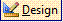

Podemos pensar nas consultas como se fossem tabelas virtuais.
Depois de executar uma consulta, o MS Access coleta os dados procurados em um dynaset.
Um dynaset se comporta como uma tabela; é uma visualização dinâmica dos dados de uma ou mais tabelas, selecionados e classificados como especificado pela consulta; vamos a um exemplo:
Para chegarmos ao nosso objetivo (imprimir o Termo de Autenticação), necessitamos fazer uma consulta às três tabelas especificadas.
Vamos apresentar a técnica para se fazer uma consulta à múltiplas tabelas (usaremos essa consulta no relatório).
Na aba , vá ao menu principal, clique no botão novo e escolha ;
Na caixa de opções, selecione , transfira os campos , , , , e para o espaço Campos selecionados; use o botão transfere-um-a-um ; (mantenha-se na tela);
Na mesma tela, selecione Tabela: Ecf e insira os campos de , , , ; (mantenha-se na tela);
Ainda na mesma tela, selecione a tabela ArquivoAutenticado e insira todos os campos clicando no botão transfere-todos ; ( agora pressione 2 X aceitando a configuação padrão)
Nomeie a consulta como e clique no botão concluir ;
![[Dica]](images/tip.gif)
Dica Ao nomear os objetos, costumamos acrescentar, no final do nome, um identificador do tipo de objeto (para isso sufixamos o nome do objeto com _TipoDoObjeto); por exemplo, se relatório, sufixo _Relatorio, se consulta sufixo _Consulta...assim em diante; o motivo você perceberá no transcorrer desse trabalho.
O MS Access abre a consulta, em dynaset, conforme figura abaixo (se não houver dado plotado, o dynaset aparece em branco, indicando nulo o retorno); agora, feche a janela, clicando no botão fechar ;
Na aba consulta, selecione o objeto , clique no botao estrutura  , conforme indicado na figura:
No modo Design (estrutura), na grade QBE, procure pelo campo e proceda conforme indicado na figura abaixo, inserindo no campo a expressão : [Entre com o código do contribuinte], dessa forma, entre colchetes;
Salve a consulta, clicando no botão salvar , no menu principal, feche a janela clicando em fechar
Pronto! agora estamos prontos para seguirmos.